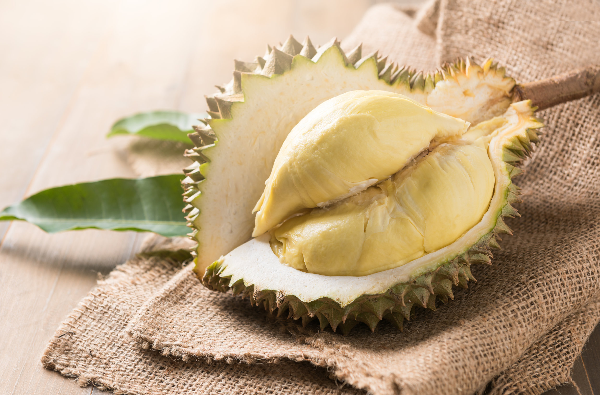
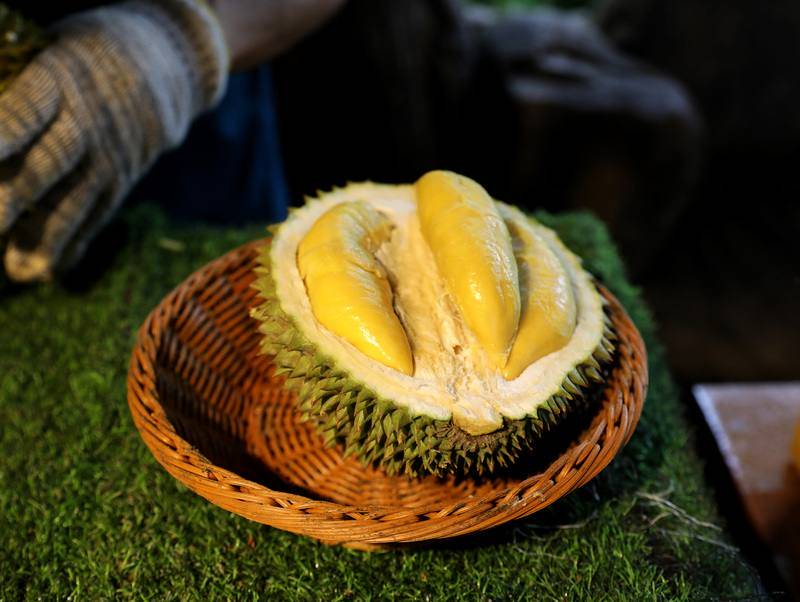

榴槤
榴槤的由來
原產於婆羅州群島，為熱帶水果，東南亞普遍都有種植，其中以泰國的產量最大，品質優良。榴槤有著水果之王的稱號，果實從生長至成熟需3-4個月，成熟後的榴槤果肉金黃，風味撲鼻；由於榴槤的特殊味道是因為果實成熟時產生硫化物的關係，所以越熟過頭的果實味道越重，許多人無法接受這樣的味道。榴槤的中文名稱是來自於馬來語Durian音譯而來，Duri為刺，an為語尾，意思指的就是「帶刺的東西」。

榴槤營養成份
榴槤營養成份相當高，含鈣、蛋白質、多種維生素、礦物等等，但它的熱量與鉀含量相當高，所以糖尿病、腎臟病患者及肥胖者應適量；血壓高、心律不整的人也要注意，食用的禁忌會比一般水果多。國人一天最好要吃兩份水果（120大卡），但從榴槤的營養分析看來，只要吃70公克左右就有120大卡的份量，但70公克實際只有約二瓣的果肉，對嗜吃榴槤的人來說，實在是太微不足道！

榴槤品種簡介
台灣進口榴槤有一半是來自泰國，1997年更高達3.6萬頓；在泰國當地人較喜愛青尼(Chanee)，原因在於它有非常濃厚的榴槤香，但果肉率不及金枕頭，故國人大都以消費金枕頭(MonThong)為主。另還有甲倫(干倫、KradumThong)、KanYao等品種。
資料來源: